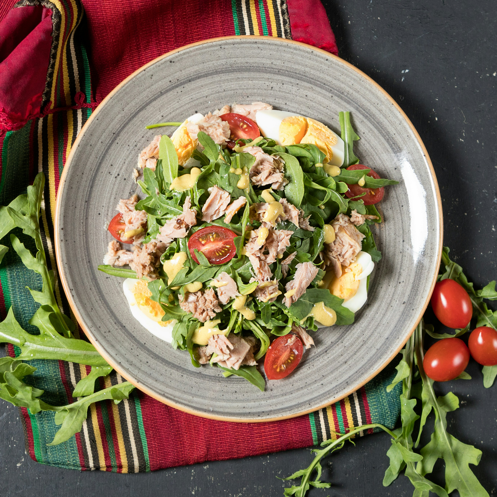

home
Tuna Salad

A delicious simple salad for when you want to feel fresh
This quick meal is great for lunches when you need to be quick on the go, but also have a healthy delicious meal.
Feel free to mix and match the ingredient and add your favourite vegetables. There are many variations of this dish.
Ingredients
- Tinned Tuna
- Sweetcorn
- Finely chopped red onions
- Salt
- Pepper
- Low fat mayonnaise
Steps
- Mix all of the above ingredients together
- Enjoy a quick, nutritious lunch